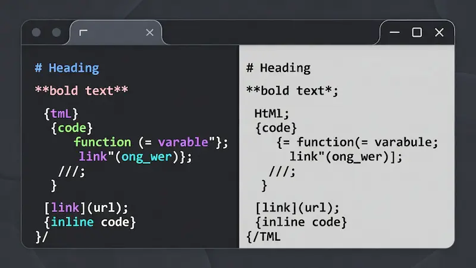

Pro Markdown Studio Max
Write, Preview, and Export Securely. No Server Storage.
Why Pro Markdown Studio Max?
Welcome to Pro Markdown Studio Max, the flagship documentation tool developed by Trusted Tools Web. As professional developers and technical writers, we understand the frustration of using online editors that are slow, insecure, or cluttered with intrusive advertisements. We needed a solution that combined the power of a desktop IDE with the convenience of a web app.
We built this tool with a strict "Local-First" philosophy: Your keyboard, your rules, your privacy. Unlike cloud-based editors that constantly upload your keystrokes to a remote database, our engine processes 100% of your data locally within your browser's memory. This ensures blazing fast performance and enterprise-grade security for your sensitive documents.
Features That Actually Matter

Designed for efficiency, every pixel of the interface serves a purpose:
- Instant Rendering: Utilizes an optimized build of Marked.js to render complex Markdown instantly without lag.
- Nebula Dark & Light Modes: The UI automatically syncs with your system preferences to reduce eye strain during late-night coding sessions.
- Smart Export Suite: Generate professional PDFs and clean HTML files directly from the browser — no server required.
- Auto-Save Protection: Your work is saved to LocalStorage after every keystroke, preventing data loss from accidental tab closures.
- Synchronized Scrolling: The editor and preview panes scroll in perfect harmony, keeping you focused on the context.
Who Is This Tool For?
Developers
Perfect for writing README.md files with syntax highlighting for JS, Python, HTML, and CSS.
Content Creators
Draft blog posts in a distraction-free environment and export clean HTML for WordPress or Ghost.
Students
Take rapid lecture notes using Markdown shortcuts and convert them to PDF assignments instantly.
No Cloud? That's the Point.
Most online editors act like "data vampires" — sucking your text into a remote database for analytics or storage. We operate on a Zero-Knowledge Architecture. Data stays in your browser's RAM and LocalStorage. We cannot see what you write, and neither can anyone else. This makes Pro Markdown Studio Max compliant with strict internal privacy policies often found in corporate environments.
Frequently Asked Questions (FAQ)
Is my data sent to any server?
No. This is a purely Client-Side application powered by JavaScript. No data ever leaves your device.
Can I use this offline?
Yes. Once the page is loaded, you can disconnect from the internet and continue working. PWA support allows installation on desktop and mobile.
Initializing secure discussion portal...